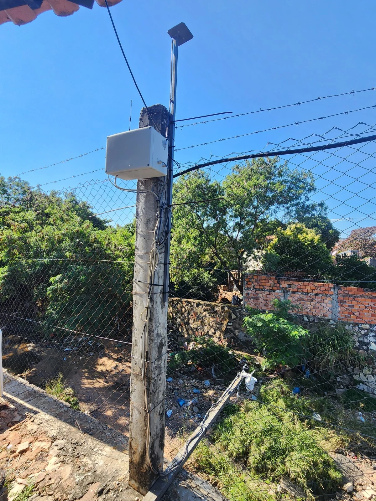

Universidad Nacional de Asunción
Facultad de Ingeniería
Contabilidad y Finanzas
Datos para decidir. Cuentas para crecer.
Primer trimestre de SensIA Analytics E.A.S. · Agosto a octubre de 2026

AlumnoMathias R. Aguilar D.
De la estación
al servicio.
Agosto
Cuatro estaciones de lluvia y cuatro de nivel. Venta y suscripciones a Agrisa.Septiembre
Estaciones de energía, temperatura y humedad, vibración y corriente, y presión.Octubre
Cinco estaciones de nivel y cinco de temperatura y humedad; dos clientes.Qué cuesta
cada estación.
Materiales y sensores, flete, mano de obra directa y depreciación productiva forman el costo de fabricación.
El resultado
se acumula.
Ganancia antes del impuesto a la renta, desde el inicio hasta cada cierre.
Recursos y
obligaciones.
Al cierre de octubre, el estado mantiene la ecuación patrimonial.
Ganancia y caja
cuentan historias distintas.
Saldo bancario al cierre de cada mes · millones de guaraníes
Indicadores para
tomar decisiones.
Referencia de software de NYU Stern: margen neto 25,49 % (enero 2026). Es orientativa: SensIA también fabrica equipos y opera en otro mercado.
Aprender para
el siguiente trimestre.
Decisiones acertadas
✓ El descuento reduce el costo de los sensores.
✓ Las suscripciones suman ingresos por el servicio de monitoreo.
Decisión por mejorar
↗ Los costos y ventas son supuestos: fijar precios sin validar cotizaciones y demanda puede generar errores.
Evaluación basada en una simulación académica.